|
6.
Process or Product Monitoring and Control
6.4. Introduction to Time Series Analysis 6.4.3. What is Exponential Smoothing?
|
|||||||||||||||||||||||||||||||||||||||||||||||||||||||||||||||||||||||||||||||||||||||||||||||||||||||||||||||||||||||||||||||
| Example comparing single, double, triple exponential smoothing |
This example shows comparison of single, double and triple exponential
smoothing for a data set.
The following data set represents 24 observations. These are six years of quarterly data (each year has four quarters). |
||||||||||||||||||||||||||||||||||||||||||||||||||||||||||||||||||||||||||||||||||||||||||||||||||||||||||||||||||||||||||||||
| Table showing the data for the example |
|
||||||||||||||||||||||||||||||||||||||||||||||||||||||||||||||||||||||||||||||||||||||||||||||||||||||||||||||||||||||||||||||
| Plot of raw data with single, double, and triple exponential forecasts |  | ||||||||||||||||||||||||||||||||||||||||||||||||||||||||||||||||||||||||||||||||||||||||||||||||||||||||||||||||||||||||||||||
| Plot of raw data with triple exponential forecasts |
 |
||||||||||||||||||||||||||||||||||||||||||||||||||||||||||||||||||||||||||||||||||||||||||||||||||||||||||||||||||||||||||||||
| Comparison of MSEs |
The updating coefficients were chosen by a computer program such that the MSE for each of the methods was minimized. |
||||||||||||||||||||||||||||||||||||||||||||||||||||||||||||||||||||||||||||||||||||||||||||||||||||||||||||||||||||||||||||||
| Example of the computation of the Initial Trend | |||||||||||||||||||||||||||||||||||||||||||||||||||||||||||||||||||||||||||||||||||||||||||||||||||||||||||||||||||||||||||||||
| Computation of initial trend |
The data set consists of quarterly sales data. The season is
1 year and since there are 4 quarters per year, \(L=4\).
Using the formula we obtain:
$$ \begin{eqnarray}
b_1 & = & \frac{1}{4} \left[ \left( \frac{y5-y1}{4} \right) + \left( \frac{y6-y2}{4} \right)
+ \left( \frac{y7-y3}{4} \right) + \left( \frac{y8-y4}{4} \right) \right] \\
& & \\
& & \\
& = & \frac{1}{4} \left[ \left( \frac{382-362}{4} \right) + \left( \frac{409-385}{4} \right)
+ \left( \frac{498-432}{4} \right) + \left( \frac{387-341}{4} \right) \right] \\
& & \\
& & \\
& = & \frac{5 + 6 + 16.5 + 11.5}{4} = 9.75 \, .
\end{eqnarray} $$
|
||||||||||||||||||||||||||||||||||||||||||||||||||||||||||||||||||||||||||||||||||||||||||||||||||||||||||||||||||||||||||||||
| Example of the computation of the Initial Seasonal Indices | |||||||||||||||||||||||||||||||||||||||||||||||||||||||||||||||||||||||||||||||||||||||||||||||||||||||||||||||||||||||||||||||
| Table of initial seasonal indices |
In this example we used the full 6 years of data. Other schemes may use only 3, or some other number of years. There are also a number of ways to compute initial estimates. |
||||||||||||||||||||||||||||||||||||||||||||||||||||||||||||||||||||||||||||||||||||||||||||||||||||||||||||||||||||||||||||||